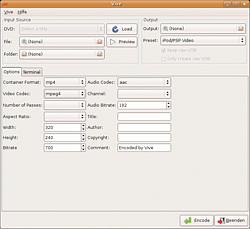

Vive
Archivierte Anleitung
Dieser Artikel wurde archiviert, da er - oder Teile daraus - nur noch unter einer älteren Ubuntu-Version nutzbar ist. Diese Anleitung wird vom Wiki-Team weder auf Richtigkeit überprüft noch anderweitig gepflegt. Zusätzlich wurde der Artikel für weitere Änderungen gesperrt.
Anmerkung: Das Programm wird seit Jahren nicht mehr weiterentwickelt. Letzte Installationsversuche bei neueren Ubuntu-Versionen blieben erfolglos.
Zum Verständnis dieses Artikels sind folgende Seiten hilfreich:

Vive  ist ein Programm zur Videoverarbeitung mit grafischer Oberfläche. Es greift auf das Kommandozeilenprogramm ffmpeg zurück. Sehr nützlich bei dieser Anwendung ist die Möglichkeit, verschiedene Codierungseinstellungen in Profilen speichern zu können, z. B. für den iPod. Da auch die DVD als Videoquelle ausgewählt werden kann, eignet sich Vive nicht nur zum Umwandeln von Audio/Videoformaten, sondern kann ebenso zum Rippen von DVDs verwendet werden.
ist ein Programm zur Videoverarbeitung mit grafischer Oberfläche. Es greift auf das Kommandozeilenprogramm ffmpeg zurück. Sehr nützlich bei dieser Anwendung ist die Möglichkeit, verschiedene Codierungseinstellungen in Profilen speichern zu können, z. B. für den iPod. Da auch die DVD als Videoquelle ausgewählt werden kann, eignet sich Vive nicht nur zum Umwandeln von Audio/Videoformaten, sondern kann ebenso zum Rippen von DVDs verwendet werden.
Installation¶
Vive greift auf verschiedene andere Programme und Bibliotheken zurück, um seine Funktionen ausführen zu können. Daher müssen vor der Installation des Programms bereits folgende Pakete installiert [1] werden:
ffmpeg - das Kommandozeilenprogramm ist die Grundlage von Vive (siehe FFmpeg)
gawk
mplayer (multiverse, [2]) - für Videovorschau
Zur Konvertierung einer Video-DVD müssen zusätzlich die Pakete
vobcopy (universe, [2])
libdvdplay0 (universe)
libdvdread3 (universe)
libdvdnav (ab Edgy in universe)
Installation mittels Deb-Paket¶
Hinweis:
Unter Ubuntu 7.10 Gutsy Gibbon funktioniert die Installation des Paketes derzeit nur mit einem kleinen Trick. Das Medibuntu-Paket von libavcodec aus der Gutsy-Quelle passt nicht zum aktuellen Vive-Paket. Daher muss man für die Installation die Medibuntu-Quelle für Feisty Fawn nutzen, die eine ältere Version des Paketes libavcodec enthält. Das Paket hat keine weiteren Abhängigkeiten und steht auch nicht im Konflikt mit anderen Paketen. Daher ist es als relativ unproblematisch einzustufen. Die Medibuntu-Quelle für Feisty sollte man jedoch nach der Installation von Vive wieder deaktivieren. Alternativ empfiehlt sich die Installation aus dem Quellcode (siehe unten).
Seit der Version 2.0 von Vive gibt es für Ubuntu ein fertiges Paket, das von der Downloadseite  des Projektes bei SourceForge heruntergeladen werden kann.
des Projektes bei SourceForge heruntergeladen werden kann.
Hinweis!
Zusätzliche Fremdquellen können das System gefährden.
Dieses Paket wurde inkl. DVD-Unterstützung erstellt. Um alle Abhängigkeiten zu erfüllen, ist es erforderlich, vor der Installation des Paketes das Medibuntu Repository als Paketquelle freizuschalten [2].
Danach kann das heruntergeladene deb-Paket wie gewohnt installiert [6] werden. Nach der Installation findet man einen Eintrag im GNOME-Menü unter
"Anwendungen -> Unterhaltungsmedien -> Vive".
Installation aus dem Quellcode¶
Die Installation aus dem Quellcode setzt voraus, dass die Tools zum Übersetzen des Quellcodes und das checkinstall-Tool installiert sind [4].
Ferner müssen folgende Entwicklerpakete installiert [1] sein:
libgnomeui-dev
libvte-dev
libavformat-dev (universe, [2])
ffmpeg
Wenn Vive auch zur Umwandlung von Video-DVDs verwendet werden soll, werden zusätzlich die Pakete
benötigt.
Paketliste zum Kopieren:
sudo apt-get install libgnomeui-dev libvte-dev libavformat-dev ffmpeg libdvdnav-dev vobcopy
sudo aptitude install libgnomeui-dev libvte-dev libavformat-dev ffmpeg libdvdnav-dev vobcopy
Die Pakete libdvdcss2 und libdvdcss-dev sind aus lizenzrechtlichen Gründen nicht in den offiziellen Paketquellen enthalten; sie können jedoch über die angegebenen Links aus dem medibuntu-Repository als deb-Paket heruntergeladen und installiert [6] werden.
Der Quellcode von Vive kann von der Downloadseite des Projektes bei SourceForge als .tar.gz-Datei heruntergeladen werden. Nachdem die Datei entpackt wurde [5], kann Vive ganz normal kompiliert werden [4]. Für eine Installation ohne DVD-Unterstützung wird dabei dem configure-Befehl der Parameter --disable-dvd angehängt.
- Erstellt mit Inyoka
-
 2004 – 2017 ubuntuusers.de • Einige Rechte vorbehalten
2004 – 2017 ubuntuusers.de • Einige Rechte vorbehalten
Lizenz • Kontakt • Datenschutz • Impressum • Serverstatus -
Serverhousing gespendet von